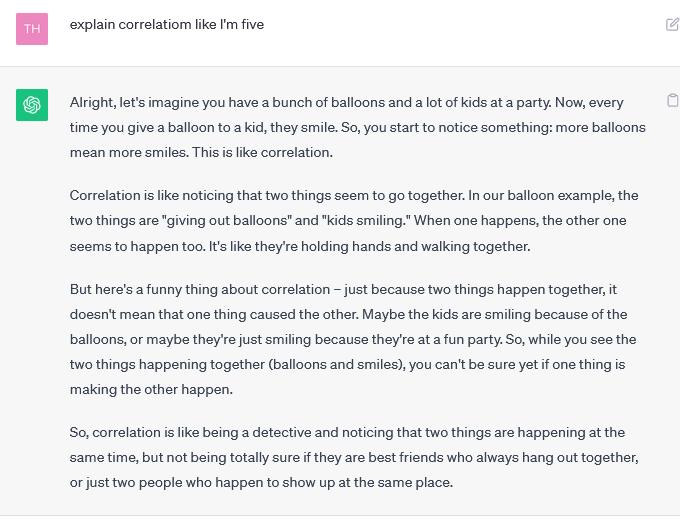

Корреляция равна причинно-следственной связи
Возможно я расширю мыслю позже, пока просто выскажу фрустрацию в воздух.
Что из корреляции не следует автоматически причинно-следственная связь это в целом верно. Но удивительно много людей принимают этот ван-лайнер настолько близко к сердцу и вводят его использование настолько в автоматическую привычку, что перестреливают и наоборот считают наличие корреляции показателем того, что никакой связи здесь нет и быть не может. И когда я пытаюсь показать, что в этом конкретном случае связь все же есть (не потому что корреляция, а на основе каких-то других соображений) начинают мне объяснять, какая я дура, что считаю, что раз есть корреляция, то может быть связь.
Другой распространенный вариант – это отрицание того, что корреляция вообще что-то значит и на ее основе можно делать какие-то выводы. Я видела тейк “корреляция не значит связь; то, что между IQ и заработком есть корреляция, не значит, что люди с высоким IQ чаще больше зарабатывают”, хотя это буквально то, что значит слово “корреляция”.
Ну а совсем весело когда эти две ошибки собираются в мегазорда, когда человек не задумывается о буквальном математическом смысле фразы “из корреляции не следует причинно-следственная связь”, а сокращает ее в своей голове до эмоционального сентимента “корреляция это хрень которой пользуются только лошары”. И любое исследование, статью, аргумент, в которых вообще упоминается корреляция, считают невалидным, потому что АВТОР НЕ ПОНИМАЕТ, ЧТО ИЗ КОРРЕЛЯЦИИ НЕ СЛЕДУЕТ ПРИЧИННО-СЛЕДСТВЕННАЯ СВЯЗЬ!!!!
Если следить не только за спорами, где я участвую лично, а в целом в спорах, аргументах и постах, которые я вижу в интернете, я очень редко вижу правильное использование фразы в ее буквальном смысле. Большинство ее говорящих совершают одну из этих ошибок. Только что провела эксперимент с ChatGPT, который на текстах в интернете и натренирован. На просьбу объяснить понятие корреляции, он объясняет не понятие корреляции как таковое, а именно идею, что из корреляции не следует связь (видимо знать, что корреляция хрень, важнее, чем знать, что такое корреляция), более того, он объясняет ее неправильно!

Качество интернет-аргументов в среднем сильно вырастет, если люди забудут эту идею и никогда не будут ее использовать. Технически корректное высказывание коснулось порчи хаоса и превратилось во вредоносный мыслевирус, волшебное слово, которым можно прекратить мышление в мозге человека.